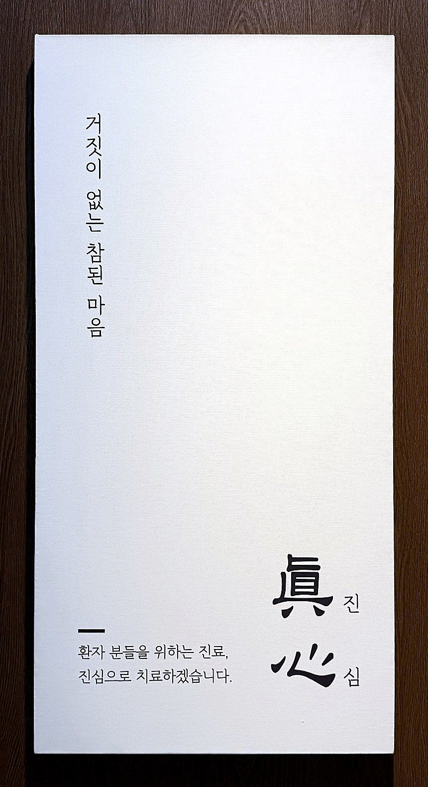
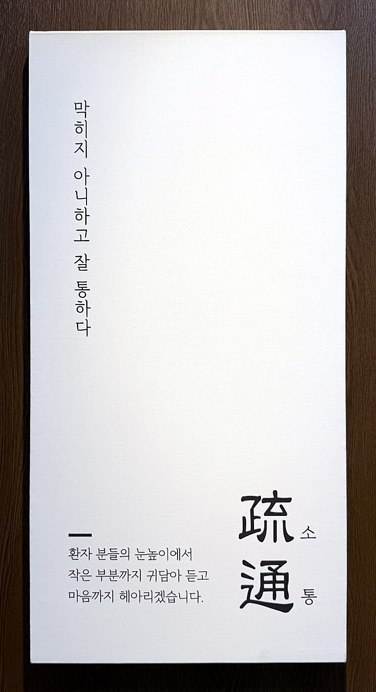
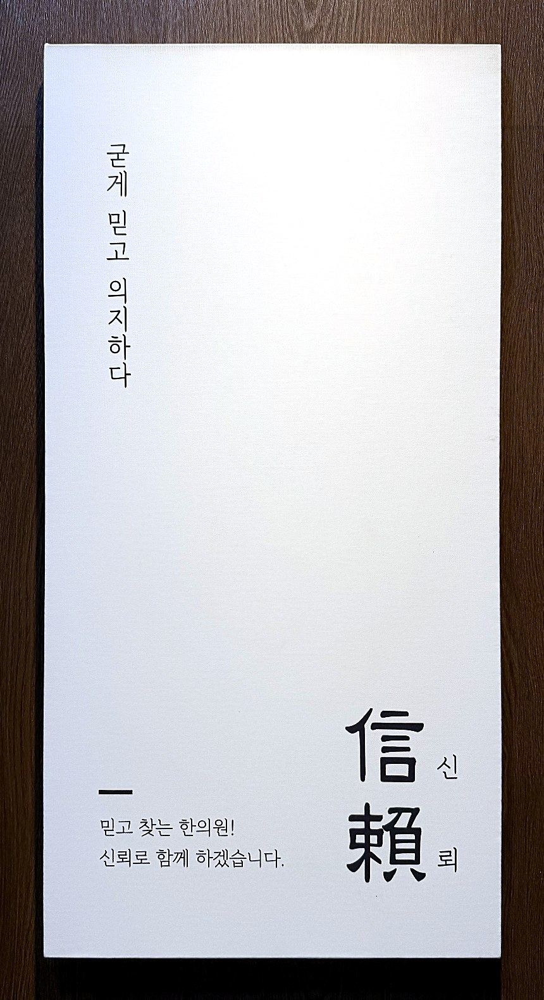

핵심 진료철학
진심, 소통, 신뢰
더나은365한의원에 들어서면 복도에 이 세 단어가 적혀 있습니다. 수년간 한의사로 살아오며 제 마음속에서 다듬어진, 저의 진료철학입니다.
— 대표원장 유덕순

한의원 복도에서
매일 아침, 이 세 글귀를 보고 진료를 시작합니다

진심으로 치료하겠습니다.

귀담아 듣고 마음까지 헤아리겠습니다.

신뢰로 함께 하겠습니다.
세 가지 약속
침·추나·한약에 마음을 담습니다
- 진심
제가 하는 치료는 침, 추나, 한약이지만 여기에 마음을 담아 행하겠습니다. 진심으로 여러분이 나았으면 좋겠습니다. 제가 하는 일이 여러분께 조금이나마 도움이 되기를 바랍니다.
- 소통
병원의 문턱을 넘어 찾아오신 데에는 각자 마음속의 이유가 있을 것입니다. 그 마음의 소리를 살펴보는 것이 치료의 시작이라고 생각합니다.
- 신뢰
믿음이 가서 다음에 또 찾는 한의원이 되고 싶습니다. 내 몸을 믿고 맡길 수 있는 한의원이 되겠습니다.
진료실에서
환자분을 만나면 자주 이렇게 말합니다
어떤 게 고민되셔서 오셨나요?
제가 어떤 걸 도와드리면 될까요?
빨리 나으셔서, 아프지 않았으면 좋겠어요.
어머님 생각은 어떠신지 궁금해요.
금호강을 달리며
이 세 단어가 정리되기까지
페이닥터로 일하던 시절, 집 앞 금호강을 달리며 이런저런 생각을 했습니다. 가장 많이 한 생각은 앞으로 제가 하게 될 한의원, 그리고 한의사로 살아갈 인생에 대한 것이었습니다.
- 나는 왜 이런 말을 환자들에게 할까?
- 내가 어떤 마음에서 이런 말들을 하는 걸까?
- 내가 중요하게 생각하는 건 무엇일까?
늘 이런 고민을 하며 달렸습니다. 매일, 수년간 같은 생각을 하다 보니 생각이 서서히 정리되더군요. 한순간에 정리된 생각은 아니었습니다.
솔직히 한의원 일이 늘 재밌기만 하다면 그건 거짓말일 겁니다. 같은 치료를 하고 수많은 환자분을 만나다 보면 저도 조금씩 지칠 때가 있습니다. 그러나 이런 근본 가치가 흔들린다면 저희 한의원도 흔들리게 된다고 생각했습니다.
그래서 이 마음을 늘 다짐하고, 나태해지지 않기를 바라며 한의원 입구에 제 마음을 새겼습니다. 아침에 출근하면 제일 먼저 이 글귀를 봅니다. 오늘도 이 세 단어를 마음에 새깁니다.
진료철학
유덕순 대표원장의 진료철학
眞心진심
진심으로 환자분들이 나았으면 좋겠습니다.
진심으로 더 나은 삶을 영위하셨으면 좋겠습니다.
그 목표를 이루기 위해 제가 할 수 있는 모든 걸 해보고 싶습니다.
疏通소통
의사 잘났다고 제 말만 하지 않습니다.
병원이라는 문턱을 넘어오셨다는 건 각양각색의 스토리가 있으실 겁니다.
어떤 마음으로 이곳을 찾게 되었는지, 그 마음의 소리까지 귀 기울여 듣겠습니다.
信賴신뢰
진심, 소통을 통하여
아픈 몸을 신뢰하는 마음으로 맡길 수 있도록 노력하겠습니다.

잘 듣는 한의원
의료기관은 의료기관다워야 합니다
가장 본질적으로 치료를 잘해야 하고, 환자분께 신뢰를 드릴 수 있어야 합니다. 그래야 환자분께 도움이 될 수 있다고 생각합니다. 그래서 저희 진료원장들에게 늘 하는 말이 있습니다.
“한의사는 치료를 잘해야 하지만,
그보다 더 중요한 건 잘 듣는 것이야.”
그래야 알맞은 치료 계획을 세울 수 있고, 환자분의 고민을 덜어 드릴 수 있기 때문입니다.
기억에 남는 환자분
병만 보지 않고, 사람을 봅니다
몇 년 전, 척수공동증으로 오랫동안 목 통증과 두통을 겪던 40대 여성분이 계셨습니다. 대학병원 치료도 오래 받으셨지만 불편함이 계속되어, 제가 근무하던 영주의 한의원을 찾아오셨습니다.
척수공동증: 척추 속 신경(척수)에 물주머니가 생겨 신경을 누르는, 흔치 않은 질환입니다.
통증에 대해 여러 가지를 여쭤보았지만 환자분은 말씀을 아끼셨습니다. 표정이 좋지 않고 얼굴이 붉어, 마음속에 쌓인 것이 많아 보였습니다.
“혹시 요즘 힘든 일도 있으세요? 치료를 잘해 드리고 싶은데, 어머니와 제가 소통이 잘 돼야 치료가 정확히 들어갈 수 있어요.”
“마음속에 있는 얘기들을 꺼내 보시겠어요? 한의학적으로 화병 증세도 있으신 것 같아서 여쭤봐요.”
그제야 네 남매를 키우며 예민해진 마음, 도시에서 시골로 이사 온 뒤의 답답함을 털어놓으셨습니다. 그때 알았습니다. 힘든 스트레스 때문에 아픔을 더 크게 느끼고 계셨다는 것을요. 그래서 통증 치료와 함께 마음의 불편함까지 살피는 방향으로 치료 계획을 세웠습니다.
제가 드린 침이나 한약이 저만의 특별한 것은 아니었습니다. 하지만 눈에 보이는 병에만 집중했다면 놓쳤을 부분이 있었습니다. 병만 바라보는 것이 아니라 사람의 상황과 마음까지 살펴야 한다는 것, 국소적인 병뿐 아니라 전인적인 관점으로 바라봐야 한다는 것을 그때 배웠습니다.
글을 마치며
‘여기는 무엇이 다를까?’ 고민하셨다면
- 진심
진심으로 여러분께 도움이 되는 치료를 하고 싶습니다. 거창하게 들릴 수 있지만, 저희의 치료가 여러분의 인생에 조금이나마 도움이 되었으면 좋겠습니다.
- 소통
병원 문턱을 넘어오는 건 쉬운 일이 아닙니다. 모두 마음속에 가지고 계신 고민이 있을 겁니다. 그 마음부터 듣는 것이 치료의 시작이라 생각합니다.
- 신뢰
진심과 소통으로 신뢰받는 병원이 되었으면 좋겠습니다. 쉬운 일은 아니지만 그 길을 가 보고 싶습니다.
꼭 저희 한의원이 아니어도 좋습니다. 여러분이 더 나은 인생을 사는 데 도움이 된다면 어디든 좋습니다. 다만 그런 곳이 보이지 않는다면, 저희 한의원이 궁금하다면 한번 방문해 보시길 바랍니다.
더나은365한의원 성서이곡은 대구에서 ‘잘 듣는 한의원’이 되고자 오늘도 노력하고 있습니다. 한결같은 마음으로 진료실에서 여러분을 기다리겠습니다. 긴 글 읽어주셔서 감사합니다.
더나은365한의원 대표원장 유덕순 드림
365일 점심시간 없이 진료
평일 매일 야간진료
오전 9시 ~ 저녁 8시
* 점심시간 없이 계속 진료합니다.
토 · 일 · 공휴일
오전 9시 ~ 오후 3시
* 점심시간 없이 계속 진료합니다.